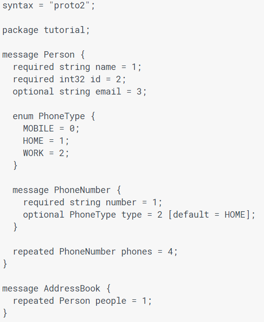

Overview
gRPC is a universal RPC (Remote Procedure Call) framework that is provided by Google. This framework is used frequently by technological giants such as Netflix and Square. RPC frameworks allow for simple and convenient ways for client-server applications to call methods outside of their own address space. gRPC simplifies this process and adds a variety of useful features such as interoperability with multiple languages, bidirectional streaming, and more.
RPC Outline
As described before, RPC frameworks allow two processes to interact despite being outside of their respective address spaces. This is generally useful for client server applications across a network. In this process, the client would want access to a function upon the server, and needs a way to pass parameters to this function and receive output. This is what RPC frameworks are made for. The picture below illustrates the procedure flow of an RPC call.

It begins with the client calling a stub method within its own address space. The purpose of the stub method is to "marshall" the parameters/input to the remote process into a readable and transmittable format which will be sent to the user as well as to "demarshall" output from a remote process call. This format within gRPC is a "protocol buffer" but there will be more on that later. Once the parameters are sent to the server, the parameters are "demarshalled" out of the transmitted format into the respective language of the server. This is done within a corresponding stub method that exists within the server. These are then passed and the remote procedure is called. Once it completes, this whole process is reversed, passing the output through a stub method, from the server to the client, where the output is demarshalled and returned to the client's original process.
RPC models are ideal for convenient client-server/query-response applications over a network, which is why they are incredibly common for a variety of popular web applications. gRPC is a very simple to understand and utilize framework that allows for easy integration of RPC structure into one's own projects. Before we begin looking at gRPC itself, let's first get an understanding of "protocol buffers"; the standard format through which data is transferred using gRPC.
Protocol Buffers
Protocol buffers are meant to be a "language neutral" format, suggesting that it is an intermediary form of data that can be processed by any programming language. This is useful for client-server applications as the languages used by client and server do not need to be indentical or known in order to communicate effectively. Some more commonly known language neutral formats include json and xml. A protocol buffer is stored in a .proto file which contain "messages" which are data structures. Within each messages, there are variable names and types that are defined. This is very similar to class structures in object orient programming. Below, there is an example of a protocol buffer that defines an addressbook.
As you can see in the image above, a Person message is created which contains a variety of values: a string for name, an int for id, an enum (finite list of values) for phone type, etc. Each variable is assigned a "tag" as an identifier for that variable. Additionally, each variable is prefaced with "required", "optional", or "repeated" which defines the use and instantiation of these variables. Once this file is complete, the protocol buffer can be compiled into a class in your respective programming language in the command line using "protoc" from the grpcio-tools package and providing the directory of the protocol file, language that you're using, and the language you are using. Now you are able to use this structure as a class in your code with accessor methods provided for fields.
Additionally, there are methods that you can use in order to enhance your construction of protocol buffers. Some convenient methods include IsInitialized(), CopyFrom(message), and Clear() whose functions are fairly self explanatory. Data can be serialized to a string via SerializeToString and parsed from a string using ParseFromString. With these methods, it's easy to work with protocol buffers within a language of your choice. Shown below is an example in Python.

Last but not least, you are able to change protocol buffers even after instances have been created, you can update the definition of a protocol buffer. The only rules that must be followed to maintain backwards and forwards compatibility are that you cannot change required variables or tag numbers. Additionally, new tag numbers for optional or repeated fields must be unique.
Finally, with an understanding of protocol buffers, we are able to tackle the gRPC itself and how to use it.
gRPC
gRPC, Google's RPC framework is available for use with a variety of language including but not limited to C++, Java, Ruby, Python, and more. There are four service methods that are available with gRPC: Unary service methods with a single request and single response, Server streaming in which there is a single client request which receives a stream containing a sequence of messages as a response, Client streaming in which the client request is sent via a stream with a sequence of messages which receives a single response, and finally, bidirectional streaming in which two independent streams are used for the request and response. gRPC guarantees message ordering which saves allows a developer to not worry about misordered or dropped messages over a network. This is in fact one of the most convenient parts about gRPC; it makes communication over a network incredibly simple. gRPC allows RPC's to be cancelled at any time (however, changes made during the beginning of the RPC are not undone). Clients are also able to establish timeouts in case the RPC is time sensitive or there are network issues.
Secure communication over a network is very important for web applications, and fortunately, gRPC provides built in authentication mechanisms to make this simple to implement. SSL/TLS is integrated to encrypt communications and is easy to set up. Additionally, token based authentication is provided, passing the tokens with a call, allowing for appropriate verification of credentials.
Now, we can begin to look at how to use gRPC. All examples given will be in python, however, gRPC is available and used very similarly in all languages. Initially, a service must be defined, naming the service, what is sent and received, and identifying the service type (unary, bidirectional stream, etc). A unary example and a server side streaming example is shown below.


Next, the interfaces for the client and server must be established. The grpcio-tools package is available to make this a interfaces easy to establish. The client must have a stub method and the server must have a servicer method(functionally similar to a stub method for the server).
Creating a server is boiled down into implementing the servicer interface and running the server to listen for requests and send information. An example of a unary servicer is shown below.

In this code, the request is asking for a feature, and the method accesses the information and returns the feature if present. (EXPLAIN THE ARGUMENTS). Similarly, methods can be established to handle request streams, where request_iterator replaces the request argument. This allows the request stream to be parsed. Returning a stream of messages is similar, with the use of "yield" instead of return, allowing a sequence of values to be yielded.
The client can created a stub method automatically by generating it from the .proto file. Then using RPC is a simple as calling stub.rpc(arg). You may also make an asynchronous call via stub.rpc.future(arg).
This is a lot of information to take in, however, google has provided robust api's, tutorials, and more for any language you are looking to use with gRPC. Additionally, for reference, there are examples provided for working with protocol buffers, and gRPC in general.
Frequently used methods
Finally, we can begin looking at the most commonly used methods when working with the gRPC package that will provide the basic functionality of gRPC to your project.
There are convenient methods to allow the creation of both client and server. To create the client, two methods are provided:
- grpc.insecure_channel(target, options)
- grpc.secure_channel(target, credentials, options)
These methods both create a channel to the server with varying levels of security. The target parameter is simply the server address, and the options parameter is an optional list of key-value pairs used to customize the channel. The secure channel has an additional parameter for credentials. These credentials can be generated through the use of built in methods provided by gRPC which can be read about here.
- grpc.server(thread_pool, handlers, interceptors, options, maximum_concurrent_rpcs)
This method creates the server that can be accessed by the client that can service RPCs. The thread_pool is not optional. It is a futures.ThreadPoolExecutor object that is necessary to service RPCs. This object can be read about in detail here. Additionally, gRPC provides methods to create server credentials similar to those used for the client's credentials.
There are some methods for creating RPCMethodHandlers that will be used by the server
- grpc.unary_unary_rpc_method_handler(behavior, request_deserializer, response_deserializer)
- grpc.unary_stream_rpc_method_handler(behavior, request_deserializer, response_deserializer)
- grpc.stream_unary_rpc_method_handler(behavior, request_deserializer, response_deserializer)
- grpc.stream_stream_rpc_method_handler(behavior, request_deserializer, response_deserializer)
These methods generate RPCMethodHandlers of the specific service type specified in the name. The behavior argument is the implementation of an RPC call. The other arguments are optional behaviors for serialization and deserialization.
The method that can be use to manage RPCMethodHandlers is:
- grpc.method_handlers_generic_handler(service, method_handlers)
This generates a GenericRPCHandler to manage RPC requests. It accepts service as an argument that specifies the service implemented by the method_handlers, which is a dictionary of method names and RPCMethodHandlers.
Two frequently used classes that are used to check on the current state of the channel and RPC calls respectively are:
- grpc.ChannelConnectivity
- grpc.StatusCode
These classes respectively contain the state of the channel or gRPC calls. There is a finite list of states these classes can contain that are listed here.
The grpc.Channel class is used on the client side in order to access the channel. In addition to methods that are used to create callable instances of each type of service given an RPC method stub, the API provides a subscription option in order to allow the client to retain information about the state of the channel, through the use of the ChannelConnectivity class described above
The grpc.Server class contains the basic methods for servicing RPC methods. This class contains the expected methods for starting and stopping the server. Additionally, methods to add secure ports and insecure ports are available to simplify network interfacing. One essential method provided is:
- add_generic_RPC_handlers(generic_RPC_handlers)
This takes an iterable of GenericRpcHandlers generated from "grpc.method_handlers_generic_handler" mentioned above. This method is called before the server is started and establishes the methods that will serve RPCs.
gRPC also provides many tools to analyze data and information about RPC calls. an exception is provided in grpc.RpcError in order to catch problems with RPC calls. Context (details and basic actions) about an RPC call is provided in multiple forms. The class grpc.RpcContext provides the context available to both server and client regarding a call. The grpc.Call class provides context available on the client side. The class grpc.ServicerContext provides the context from the server side.
Conclusion
Hopefully this tutorial was able to walk you through the basics of gRPC. It's a little bit dense and complicated at first, however, gRPC is fairly intuitive once you get a basic grasp of the concepts behind it. Fortunately, there is a wealth of tutorials available online regarding the subject along with many examples and api's provided by google themselves. Good luck on your future work with gRPC!